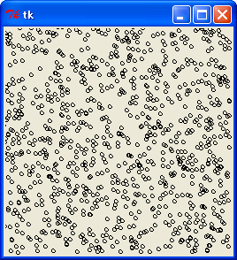
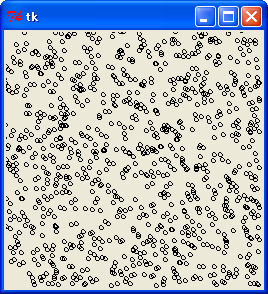

乱数の続きです。今回は lagged fibonacci 法という乱数生成法を説明します。そのあとで、乱数を使ったアルゴリズムやデータ構造 (Skip List) を紹介します。
lagged fibonacci 法は、次の漸化式で乱数を生成する方法です。
Xi = Xi-p + Xi-q (mod M) p, q, M : 整数 M = 2w, p > q > 0
p = 2, q = 1 とするとフィボナッチ数列になりますが、通常はそれよりも大きな値を指定します。ただし、p と q の値は条件があります。多項式 Xp + Xq + 1 が mod 2 における p 次の原始多項式でなければいけません。この条件は M 系列の漸化式と同じです。ようするに、M 系列の漸化式で排他的論理和 (xor) の代わりに加算 (+) を使う方法が lagged fibonacci 法なのです。このため、加算生成法と呼ばれることもあります。
lagged fibonacci 法の場合、最下位ビットは M 系列と同じになります。上位ビットは下位ビットからの桁上がりがあるので、よりランダムになることが期待できます。wikipedia - Lagged_Fibonacci_generator によると、lagged fibonacci 法の周期は (2p - 1) * 2w-1 になるそうです。p と q の値は、wikipedia - Lagged_Fibonacci_generator を参考にしてください。
UNIX 系の OS では、Ｃ言語のライブラリ関数に random() が用意されている処理系があります。参考文献 1 によると、この関数は乱数の生成に lagged fibonacci 法が使われていて、M = 231, p = 31, q = 3 だそうです。
それでは、プログラムを作りましょう。lagged fibonacci 法のプログラムは、M 系列乱数と同様に循環配列 (リングバッファ) を使うと簡単です。次のリストを見てください。
リスト : lagged fibonacci 法
# coding: utf-8
# lrand.py
# 定数
RAND_MAX = 0xffffffff
P = 63
Q = 31
class Random:
def __init__(self, seed = 1):
self._bad_init_buff(seed) # _init_buff のほうがよい
self.p = 0
self.q = P - Q
# warm up
for _ in xrange(P * 5): self.irand()
# 初期化
def _init_buff(self, seed):
buff = [0] * P
buff[0] = seed & RAND_MAX
for i in xrange(1, P):
buff[i] = 1812433253 * (buff[i-1] ^ (buff[i-1] >> 30)) + i
buff[i] &= RAND_MAX
self.buff = buff
def _bad_init_buff(self, seed):
buff = [0] * P
buff[0] = seed & RAND_MAX
for i in xrange(1, P):
buff[i] = (69069 * buff[i-1] + 1) & RAND_MAX
self.buff = buff
# 整数の一様乱数
def irand(self):
x = (self.buff[self.p] + self.buff[self.q]) & RAND_MAX
self.buff[self.p] = x
self.p += 1
if self.p >= P: self.p = 0
self.q += 1
if self.q >= P: self.q = 0
return x
# 実数の一様乱数
def random(self):
return (1.0 / (RAND_MAX + 1.0)) * self.irand()
# test
if __name__ == '__main__':
a = Random()
for _ in xrange(16): print a.irand()
今回のプログラムは p = 63, q = 31 としました。このように lagged fibonacci 法のプログラムは簡単ですが、大きな問題点が一つあります。M 系列乱数と同様に、初期値の設定が難しいのです。lagged fibonacci 法の場合、初期値のよしあしによって、生成される乱数の品質は大きく左右されます。上記リストのメソッド _bad_init_buff のように、単純な線形合同法で初期値を設定すると、最下位ビットに規則性が生じる場合があります。テストの実行例を見てください。
3351381483 3600198936 713741601 4078983510 2932271303 4158751556 1988399709 905244258 2476728163 885058096 4103076185 541930030 4220224959 172215772 2006713877 3126128826
奇数と偶数が交互に出現していますね。また、seed の値を変えて乱数を生成し、その最下位ビットを表示すると次のようになります。
1: 1 0 1 0 1 0 1 0 1 0 1 0 1 0 1 0 1 0 1 0 1 0 1 0 1 0 1 1 1 1 1 0 2: 0 1 0 1 0 1 0 1 0 1 0 1 0 1 0 1 0 1 0 1 0 1 0 1 0 1 1 1 1 1 0 1 3: 1 0 1 0 1 0 1 0 1 0 1 0 1 0 1 0 1 0 1 0 1 0 1 0 1 0 1 1 1 1 1 0 4: 0 1 0 1 0 1 0 1 0 1 0 1 0 1 0 1 0 1 0 1 0 1 0 1 0 1 1 1 1 1 0 1 5: 1 0 1 0 1 0 1 0 1 0 1 0 1 0 1 0 1 0 1 0 1 0 1 0 1 0 1 1 1 1 1 0 6: 0 1 0 1 0 1 0 1 0 1 0 1 0 1 0 1 0 1 0 1 0 1 0 1 0 1 1 1 1 1 0 1 7: 1 0 1 0 1 0 1 0 1 0 1 0 1 0 1 0 1 0 1 0 1 0 1 0 1 0 1 1 1 1 1 0 8: 0 1 0 1 0 1 0 1 0 1 0 1 0 1 0 1 0 1 0 1 0 1 0 1 0 1 1 1 1 1 0 1 9: 1 0 1 0 1 0 1 0 1 0 1 0 1 0 1 0 1 0 1 0 1 0 1 0 1 0 1 1 1 1 1 0 10: 0 1 0 1 0 1 0 1 0 1 0 1 0 1 0 1 0 1 0 1 0 1 0 1 0 1 1 1 1 1 0 1 11: 1 0 1 0 1 0 1 0 1 0 1 0 1 0 1 0 1 0 1 0 1 0 1 0 1 0 1 1 1 1 1 0 12: 0 1 0 1 0 1 0 1 0 1 0 1 0 1 0 1 0 1 0 1 0 1 0 1 0 1 1 1 1 1 0 1 13: 1 0 1 0 1 0 1 0 1 0 1 0 1 0 1 0 1 0 1 0 1 0 1 0 1 0 1 1 1 1 1 0 14: 0 1 0 1 0 1 0 1 0 1 0 1 0 1 0 1 0 1 0 1 0 1 0 1 0 1 1 1 1 1 0 1 15: 1 0 1 0 1 0 1 0 1 0 1 0 1 0 1 0 1 0 1 0 1 0 1 0 1 0 1 1 1 1 1 0 16: 0 1 0 1 0 1 0 1 0 1 0 1 0 1 0 1 0 1 0 1 0 1 0 1 0 1 1 1 1 1 0 1
seed の値を変更しても、最下位ビットの出現パターンは 2 通りしかありません。参考文献 1 によると、Ｃ言語のライブラリ関数 random() にも同様の問題点があり、最下位ビットの出現パターンは 4 通りしかないそうです。
そこで、参考文献 2 のメルセンヌツイスター (MT) で用いられている方法を試してみました。それがメソッド _init_buff です。テストの実行結果は次のようになります。
236933495 509925830 3863995731 2974840519 1866551576 1916580339 2985806050 2854102726 3274029609 4192491073 1074543120 2532069941 472366645 2824704591 1827129857 1512725168
最下位ビットの出現パターンは次のようになります。
1: 1 0 1 1 0 1 0 0 1 1 0 1 1 1 1 0 0 0 1 1 0 1 1 1 1 1 0 0 0 0 1 1 2: 0 1 1 1 1 0 1 0 0 0 1 0 1 0 1 1 0 1 1 0 1 0 0 1 1 0 1 1 1 1 1 1 3: 1 0 0 0 1 0 1 1 0 0 0 1 1 0 1 1 1 1 0 1 1 1 1 0 1 0 1 0 1 1 0 0 4: 0 1 1 0 1 0 0 1 0 0 1 0 1 0 0 1 0 0 1 1 0 0 1 1 0 1 0 0 0 0 0 1 5: 1 1 0 1 0 1 0 0 0 1 1 0 1 1 1 0 1 1 0 1 1 1 1 0 0 1 1 0 0 1 1 0 6: 0 1 0 1 1 1 1 1 0 1 1 0 1 0 0 1 1 0 0 1 1 1 0 1 0 0 1 0 1 1 0 1 7: 1 1 0 0 0 1 0 1 1 0 0 0 1 1 1 0 0 0 1 1 1 1 1 1 0 0 0 0 1 0 0 1 8: 1 1 1 1 1 0 1 0 1 0 0 1 0 1 1 0 0 1 1 1 0 0 1 1 1 1 0 1 1 0 0 1 9: 1 1 1 1 1 1 1 0 0 1 1 1 1 0 1 1 0 1 0 1 0 0 0 1 1 0 1 1 0 0 0 0 10: 1 1 0 0 1 1 1 0 1 1 0 1 0 1 1 0 0 1 0 0 0 0 1 1 0 1 1 0 1 0 0 0 11: 1 1 1 1 0 1 0 1 1 0 1 0 0 0 1 0 0 1 0 1 1 0 0 1 1 1 1 1 1 1 1 1 12: 0 1 1 0 1 0 1 0 0 0 0 1 1 0 1 0 0 0 1 0 1 1 0 1 0 1 1 1 0 1 0 1 13: 1 1 0 1 1 0 0 1 1 1 1 1 0 0 0 0 1 1 1 1 1 1 1 1 1 1 0 0 1 0 0 0 14: 0 0 0 1 0 0 0 1 1 0 0 1 1 1 1 1 1 0 1 1 1 0 0 0 1 1 0 1 1 1 0 1 15: 0 0 0 1 1 1 1 0 1 0 0 1 0 0 1 1 1 0 0 1 1 0 1 1 1 1 0 1 0 1 1 0 16: 1 0 1 0 0 1 0 1 1 1 1 1 1 1 1 1 0 1 1 0 1 0 1 0 1 1 1 1 0 1 1 1
一見すると効果があるように思われますが、この方法が lagged fibonacci 法に適しているかどうかは詳しく調べてみないとわかりません。実際に lagged fibonacci 法を使う場合は、生成される乱数の品質を検査したほうがよいでしょう。
それでは、簡単な方法で lagged fibonacci 法を評価してみましょう。乱数が実数 [0, 1.0) の区間で均等に出現する場合、乱数 x の平均値は個数 n を大きくすると 1 / 2 に近づきます。また、乱数 x の 2 乗の平均値は 1 / 3 に、3 乗の平均値は 1 / 4 に近づきます。一般に、乱数 x の k 乗の平均値は、n を大きくすると 1 / (k + 1) に近づきます。2 乗の平均値を 2 次積率、3 乗の平均値を 3 次積率といいます。この関係を使って、乱数の一様性をチェックすることができます。プログラムは次のようになります。
リスト : 乱数のテスト (1)
import rand1, mrand, lrand
def test(gen, n = 1000000):
c1 = 0.0
c2 = 0.0
c3 = 0.0
c4 = 0.0
for _ in xrange(n):
x = gen.random()
c1 += x
c2 += x * x
c3 += x * x * x
c4 += x * x * x * x
return c1 / n, c2 / n, c3 / n, c4 / n
# TEST
for m in [rand1, mrand, lrand]:
x = m.Random()
a = 0.0
b = 0.0
c = 0.0
d = 0.0
for _ in xrange(10):
y = x.irand()
a0, b0, c0, d0 = test(m.Random(y))
a += a0
b += b0
c += c0
d += d0
a /= 10.0
b /= 10.0
c /= 10.0
d /= 10.0
print a, "%.4f" % (abs(a - 0.5) / 0.5 * 100)
print b, "%.4f" % (abs(b - 1/3) / (1/3) * 100)
print c, "%.4f" % (abs(c - 0.25) / 0.25 * 100)
print d, "%.4f" % (abs(d - 0.2) / 0.2 * 100)
初期値を変えて 10 個の乱数列で積率を計算して、その平均値を求めます。初期値は乱数で選んでいます。結果は次のようになりました。
表 : 乱数のテスト (1) 結果
次数: 線形合同法 誤差[%]: M 系列乱数 誤差[%]
--------------------------------------------
2 : 0.50029679 0.0594 : 0.49998980 0.0020
3 : 0.33369205 0.1076 : 0.33329714 0.0109
4 : 0.25036538 0.1462 : 0.24995086 0.0197
5 : 0.20035820 0.1791 : 0.19994654 0.0267
次数: lag-fibo 誤差[%] : lag-fibo(bad) 誤差[%]
--------------------------------------------
2 : 0.49990238 0.0195 : 0.50012785 0.0256
3 : 0.33321685 0.0349 : 0.33346846 0.0405
4 : 0.24988653 0.0454 : 0.25013243 0.0530
5 : 0.19989549 0.0523 : 0.20012608 0.0630
次数を増やすと線形合同法の誤差は大きくなります。M 系列乱数と lagged fibonacci 法は、次数を増やしても誤差はそれほど大きくなりません。また、lag-fibo(bad) は lagged fibonacci 法で初期化に _bad_init_buff を使った場合です。誤差は _init_buff よりも少し大きくなりました。
次は、最下位 8 ビットで座標 (x, y) を生成し、それを図に示してみましょう。図は Tkinter を使うと簡単です。次のリストを見てください。
リスト : 最下位 8 ビットで (x, y) を生成
from Tkinter import *
import lrand
root = Tk()
c0 = Canvas(root, width = 256, height = 256)
c0.pack()
a = rand1.Random()
for _ in xrange(1000):
x = a.irand() % 256
y = a.irand() % 256
c0.create_oval(x - 2, y - 2, x + 2, y + 2)
root.mainloop()
結果は次のようになります。
 最下位 8 bit で (x, y) を生成した場合
線形合同法のように明確な規則性は現れていません。ご参考までに、最上位 8 bit を使った場合を示します。
 最上位 8 ビットで (x, y) を生成した場合
最後は前回行った多次元分布のテストです。次のリストを見てください。
リスト : 乱数のテスト (2)
import rand1, mrand, lrand
def test(gen, k, n = 1000000):
c = 0.0
buff = []
for _ in xrange(k - 1):
buff.append(gen.random())
for _ in xrange(n):
buff.append(gen.random())
c += reduce(lambda x, y: x * y, buff)
del buff[0]
return c / n
# TEST
for m in [rand1, mrand, lrand]:
x = m.Random()
for k in xrange(2, 6):
a = 0.0
for _ in xrange(10):
y = x.irand()
a += test(m.Random(y), k)
a /= 10.0
b = 1.0 / (2**k)
print k, a, "%.3f" % (abs(a - b) / b * 100)
初期値を変えて 10 個の乱数列で (乱数の積の総和) / n を計算して、その平均値を求めます。初期値は乱数で選んでいます。結果は次のようになりました。
表 : 乱数のテスト (2) 結果
次数 : 線形合同法 誤差[%]: M 系列乱数 誤差[%]
---------------------------------------------
2 : 0.25039466 0.158 : 0.24999050 0.004
3 : 0.12536870 0.295 : 0.12494074 0.047
4 : 0.06282540 0.521 : 0.06243651 0.102
5 : 0.03149730 0.791 : 0.03126813 0.058
次数 : lag-fibo 誤差[%]: lag-fibo(bad) 誤差[%]
---------------------------------------------
2 ; 0.24988520 0.046 : 0.25014472 0.058
3 : 0.12496327 0.029 : 0.12492874 0.057
4 : 0.06251122 0.018 : 0.06247307 0.043
5 : 0.03124667 0.011 : 0.03129250 0.136
テスト (1) と同様に、次数を増やすと線形合同法の誤差は大きくなります。M 系列乱数と lagged fibonacci 法は、次数を増やしても誤差はそれほど大きくなりません。また、lagged fibonacci 法で初期化に _bad_init_buff を使った場合、誤差は大きくなります。
これらの結果を見ると、lagged fibonacci 法は線形合同法よりも品質の良い乱数を生成しているように思います。また、初期化のよしあしによって性能が左右されることも確認できました。
もっとも、今回のテストは簡単なものなので、これだけで lagged fibonacci 法の評価を決めることはできません。また、lagged fibonacci 法にかぎらず、実際に擬似乱数を使う場合は、乱数の品質を検定したほうがよいでしょう。興味のある方は擬似乱数の検定法について調べてみてください。
次は、乱数を使って最悪のケースを回避する方法を紹介します。拙作のページ 整列 [1] で説明したクイックソートは、枢軸 (pivot) を基準にして大きなデータと小さなデータの 2 つの区間に分けてソートを行います。このとき、pivot の選び方でクイックソートの効率は大きく左右されます。最悪のケースが最小値または最大値を選ぶ場合で、クイックソートの実行時間はデータ数の 2 乗に比例する遅いソートになってしまいます。
このため、ソートする区間から数個のデータを選び、その中から中央の値を枢軸に選ぶ方法があります。この方法は 整列 [1] で詳しく説明しました。このほかに、もう一つ方法があります。それが乱数で枢軸を選ぶ方法です。次のリストを見てください。
リスト : クイックソート
def quick_sort(buff, low, high):
pivot = buff[random.randint(low, high)]
# pivot = buff[(low + high)/2]
i = low
j = high
while True:
while pivot > buff[i]: i += 1
while pivot < buff[j]: j -= 1
if i >= j: break
temp = buff[i]
buff[i] = buff[j]
buff[j] = temp
i += 1
j -= 1
if low < i - 1: quick_sort(buff, low, i - 1)
if high > j + 1: quick_sort(buff, j + 1, high)
区間 low, high の中から枢軸 pivot を選ぶのに randint を使っています。randint は引数に low, high を指定すると、low 以上 high 以下の乱数を返します。コメントアウトしてあるように、区間の中央を枢軸にすると、山型データが最悪のケースになり、スタックオーバーフローが発生します。この場合、枢軸をランダムで選ぶことにより、最悪のケースを回避することができます。もちろん、完璧に回避できるわけではありませんが、最悪のケースを何回も続けて選ぶ確率は相当に低くなると思われます。山型データでも高速にソートできるでしょう。
実行結果は次のようになりました。
表 : quick sort の結果 (単位 : 秒) 個数 乱数 昇順 逆順 山型 ----------------------------------- 1000 : 0.011 0.007 0.007 0.011 2000 : 0.023 0.014 0.015 0.022 4000 : 0.047 0.029 0.031 0.047 8000 : 0.099 0.060 0.063 0.097 16000 : 0.203 0.126 0.130 0.201 32000 : 0.421 0.260 0.269 0.418 実行環境 : Windows XP, celeron 1.40 GHz, Python 2.4.2
乱数を生成する分だけ、実行速度はどうしても遅くなります。ですが、山型データでもスタックオーバーフローは発生せず、高速にソートすることができました。このように、乱数を使うことにより、簡単な方法で最悪のケースを回避することができます。
最後に、乱数を使ったデータ構造の例として「スキップリスト (Skip List) 」を紹介しましょう。スキップリストは 1990 年に William Pugh が考案したデータ構造です。スキップリストは連結リスト (linked list) の一種ですが、複数のレベルのリンクを持っていて、乱数を使って平衡木 (balanced tree) とほぼ同等の性能を実現しています。
平衡木は今までに AVL 木、2-3 木、赤黒木 を取り上げてきました。これらの平衡木は、性能は優れているのですが、プログラムはけっこう複雑になります。スキップリストは連結リストなので構造が単純です。平衡木と同等の状態を作る処理も乱数にまかせているので、AVL 木や赤黒木と違ってプログラムは簡単になります。これがスキップリストの長所です。ただし、バランスが崩れる確率は 0 ではないので、AVL 木や赤黒木よりも性能が悪くなる場合もあります。また、メモリの使用量は二分木よりも多くなります。
今回はスキップリストについて簡単に説明し、実際にプログラムを作ってみましょう。なお、スキップリストの詳しい説明は William Pugh の論文 "Skip lists: a probabilistic alternative to balanced trees" をお読みください。入手先のリンクは Skip list - Wikipedia に記載されています。
スキップリストは複数のリンクを持っていて、それが階層構造になっています。最下層のリンクを Level 0 としましょう。Level 0 のリンクは通常の連結リストと同じで、隣のセルをリンクします。他のレベルのリンクはいくつかのセルをスキップします。たとえば Level 1 のリンクは一つおきにセルをスキップし、level 2 のリンクは 3 つおきにセルをスキップします。Level が高くなるほどスキップするセルの個数を増やします。これを図に示すと、次のようになります。
┌─┐ ┌─┐ ┌─┐
Level 2 │ ┼────────────→│ ┼────────────→│／│
├─┤ ┌─┐ ├─┤ ┌─┐ ├─┤
Level 1 │ ┼────→│ ┼────→│ ┼────→│ ┼────→│／│
├─┤ ┌─┐ ├─┤ ┌─┐ ├─┤ ┌─┐ ├─┤ ┌─┐ ├─┤
Level 0 │ ┼→│ ┼→│ ┼→│ ┼→│ ┼→│ ┼→│ ┼→│ ┼→│／│
└─┘ └─┘ └─┘ └─┘ └─┘ └─┘ └─┘ └─┘ └─┘
Head １ ２ ３ ４ ５ ６ ７ 終端
図 : スキップリスト
スキップリストの場合、データは昇順に並べておきます。1 を格納するセルは Level 0 のリンクしかありませんが、2 を格納するセルには Level 0, 1 のリンクがあり、4 を格納するセルには Level 0, 1, 2 のリンクがあります。Level 0 のリンクは連結リストと同じですが、Level 1 のリンクをたどると 2, 4, 6 になり、Level 2 のリンクをたどると 4 しかありません。
スキップリストは、これらのリンクを使ってデータを高速にアクセスすることができます。たとえば、7 を探してみましょう。最初に Level 2 のリンクをたどります。Head の次は 4 で、7 よりも小さいですね。7 は 4 よりも後ろのセルにあることがわかります。再度 Level 2 のリンクをたどると終端になります。そこで、次は Level 1 のリンクをたどります。4 の次は 6 で、7 よりも小さいですね。7 は 6 よりも後ろのセルにあることがわかります。そこで、再度 Level 1 のリンクをたどります。すると、終端になるので、次は Level 0 のリンクをたどります。6 の次は 7 なので、データを見つけることができました。
上図のスキップリストからデータを探索する処理は、二分木からデータを探索する処理とほぼ同じになります。次の図を見てください。
(root)
４
／ ＼
／ ＼
２ ６
／ ＼ ／ ＼
１ ３ ５ ７
図 : 二分木
スキップリストの場合、Level 0 のセルは二分木の葉に相当します。そして、Level 1 のセルは二分木の節 2, 6 に相当し、Level 2 のセルは二分木の節 4 に相当します。スキップリストは、高レベルのリンクからデータを探していくことで、二分木と同様の処理を実現しているのです。
問題はスキップリストにデータを挿入する場合です。スキップリストはソート済みのリストなので、データを挿入する位置は簡単に決まりますが、そのセルのレベルはどうやって決めたらよいのでしょうか。スキップリストはこの問題を乱数を使って解決しています。つまり、セルのレベルは乱数で決めるのです。
二分木の場合、データをランダムに挿入すると、木の高さはデータの個数を N とすると log N 程度になります。スキップリストの場合も、レベルの上限値 MAX_LEVEL を log N に設定します。そして、Level k のセルの個数が N / 2k+1 程度になるように設定すると、二分木の階層構造と同じような状態に近づけることができます。これを出現確率で表すと、Level 0 が 1 / 2, Level 1 が 1 / 4, Level 2 が 1/ 8, ... Level k が 1 / 2k+1 になります。この確率でセルのレベルを設定すればいいわけです。
ただし、セルのレベルを乱数で決めているので、高いレベルのセルが隣り合う場合もありえます。高いレベルのリンクでスキップするセルの数が少なくなると、スキップリストの性能は劣化してしまいます。平衡木の場合、木のバランスは一定の範囲に収まることが保障されていますが、スキップリストの場合、そのような保障はないのです。したがって、場合によってはスキップリストの性能が悪くなることもあるでしょう。ご注意くださいませ。
それではプログラムを作りましょう。最初にセルとスキップリストを表すクラスを定義します。
リスト : クラスの定義
# 定数
MAX_LEVEL = 16
P = 0.5
# スキップリスト
class SkipList:
# セルの定義
class Cell:
def __init__(self, data, level):
self.data = data
self.next = [None] * (level + 1)
def __init__(self):
self.header = SkipList.Cell(None, MAX_LEVEL)
self.update = [None] * (MAX_LEVEL + 1)
スキップリストのクラス名は SkipList とし、セルは Cell としました。レベルの最大値は MAX_LEVEL (16) としました。この値は SkipList のインスタンス変数に格納してもかまいません。その場合は SkipList() の引数で指定できると便利でしょう。
Cell のインスタンス変数にはデータを格納する data と、各レベルのセルを参照する next を用意します。next は大きさが level + 1 の配列になります。next は None で初期化します。SkipList にはヘッダを格納するインスタンス変数 header と挿入・削除処理で使用する配列 update を用意します。header は Cell のオブジェクトで初期化します。
次はデータを探索するメソッド search を作ります。
リスト : データの探索
def search(self, x):
cp = self.header
# 探索
for i in xrange(MAX_LEVEL, -1, -1):
while cp.next[i] is not None and cp.next[i].data < x:
cp = cp.next[i]
cp = cp.next[0]
if cp is not None:
return cp.data == x
return False
データの探索は MAX_LEVEL から順番にリンクをたどっていきます。for ループの変数 i はレベルを表しています。cp.next[i] が None ではなく、cp.next[i].data が x よりも小さい間は、同じレベルのリンクをたどります。while ループを終了したら、一つ下のレベルのリンクをたどります。
Level 0 のリンクをたどって for ループを終了すると、cp は x の直前のセルになります。cp を cp.next[0] に更新し、cp が None でなければ、cp.data と x を比較して、その結果を return で返します。cp が None の場合、スキップリストの中に x はないので False を返します。
次はデータを挿入するメソッド insert を作ります。
リスト : データの挿入
def insert(self, x):
update = self.update
cp = self.header
# 探索
for i in xrange(MAX_LEVEL, -1, -1):
while cp.next[i] is not None and cp.next[i].data < x:
cp = cp.next[i]
update[i] = cp
# 同じデータがあるか
if cp.next[0] is not None and cp.next[0].data == x: return False
# 新しいセルを挿入
level = _getlevel()
new_cp = SkipList.Cell(x, level)
for i in xrange(0, level + 1):
new_cp.next[i] = update[i].next[i]
update[i].next[i] = new_cp
return True
挿入する位置を求める処理はデータの探索処理と同じですが、各レベルのリンクを書き換えるため、レベルごとに直前のセルを配列 update に格納しておきます。探索処理の for ループの中で、一つ下のレベルに移るときに、cp を update[i] にセットします。これで直前のセルを保存することができます。
for ループのあと、cp が Level 0 における直前のセルになります。cp.next[0].data が x と等しい場合は、同じデータがあるので False を返します。そうでなければ、cp の直後に新しいセルを挿入します。関数 _getlevel でセルのレベルを求め、Cell(x, level) で新しいセル new_cp を生成します。
次の for ループで、new_cp をレベル 0 から level までのリストの中に挿入します。変数 i はレベルを表しています。new_cp.next[i] に update.next[i] をセットします。これで、new_cp と後ろのセルがリンクされます。それから、update[i].next[i] を new_cp に書き換えます。これで、直前のセルと new_cp がリンクされます。これで新しいセルをレベル 0 から level のリストの中に挿入することができます。
次は乱数を使ってレベルを設定する関数 _getlevel を作ります。
リスト : レベルの設定
def _getlevel():
level = 0
while level < MAX_LEVEL:
if random.random() < P: break
level += 1
return level
P は 0.5 とします。関数 random は実数 [0, 1.0) の一様乱数を生成します。P よりも小さい場合は break で while ループを脱出します。そうでなければ、level を +1 して処理を繰り返します。これで、level 0, 1, 2, ... の出現確率は 1/2, 1/4, 1/8, ... になります。
それでは、ここでデータ挿入の簡単なテストを行ってみましょう。テストプログラムは次のようになります。
リスト : データ挿入の簡単なテスト
import skiplist
def print_skiplist(a):
for i in xrange(0, len(a.header.next) + 1):
cp = a.header.next[i]
if cp is None: break
while cp is not None:
print cp.data,
cp = cp.next[i]
print
a = skiplist.SkipList()
for x in xrange(8):
a.insert(x)
print_skiplist(a)
print '-----'
関数 print_skiplist は各レベルのリストを表示します。実行結果は次のようになりました。
0 0 0 ----- 0 1 0 1 0 1 ----- 0 1 2 0 1 0 1 ----- 0 1 2 3 0 1 0 1 ----- 0 1 2 3 4 0 1 4 0 1 4 4 4 ----- 0 1 2 3 4 5 0 1 4 0 1 4 4 4 ----- 0 1 2 3 4 5 6 0 1 4 6 0 1 4 6 4 4 ----- 0 1 2 3 4 5 6 7 0 1 4 6 0 1 4 6 4 4 -----
このテストはデータ数が少ないのでバランスは少し崩れていますが、正常に動作しています。乱数を使っているので、結果はプログラムを実行するたびに変わります。興味のある方はいろいろ試してみてください。
次はデータを削除するメソッド delete を作ります。
リスト : データの削除
def delete(self, x):
update = self.update
cp = self.header
# 探索
for i in xrange(MAX_LEVEL, -1, -1):
while cp.next[i] is not None and cp.next[i].data < x:
cp = cp.next[i]
update[i] = cp
# 同じデータがあるか
if cp.next[0] is not None and cp.next[0].data == x:
cp1 = cp.next[0]
for i in xrange(0, len(cp1.next)):
update[i].next[i] = cp1.next[i]
return True
return False
削除するデータを探す処理はデータの探索処理と同じですが、データの挿入処理と同様に、レベルごとに直前のセルを配列 update に格納しておきます。for ループを終了したあと、x と同じデータがあるかチェックします。見つからない場合は False を返します。
データの削除は簡単です。x を格納しているセルを cp1 にセットします。for ループの変数 i がレベルを表します。そして、cp1 をリンクしているセルの next[i] を cp1.next[i] に置き換えれば、各レベルのリストから cp1 を削除することができます。最後に True を返します。
それでは、ここでデータ削除の簡単なテストを行ってみましょう。テストプログラムは次のようになります。
リスト : データ削除の簡単なテスト
import skiplist, random
def print_skiplist(a):
for i in xrange(0, len(a.header.next) + 1):
cp = a.header.next[i]
if cp is None: break
while cp is not None:
print cp.data,
cp = cp.next[i]
print
a = skiplist.SkipList()
buff = [random.randint(0, 100) for _ in xrange(8)]
for x in buff:
a.insert(x)
print_skiplist(a)
for x in buff:
print '-----'
print 'delete', x
a.delete(x)
print_skiplist(a)
実行結果は次のようになりました。
6 27 34 42 50 70 85 95 34 50 85 34 34 ----- delete 95 6 27 34 42 50 70 85 34 50 85 34 34 ----- delete 6 27 34 42 50 70 85 34 50 85 34 34 ----- delete 50 27 34 42 70 85 34 85 34 34 ----- delete 85 27 34 42 70 34 34 34 ----- delete 42 27 34 70 34 34 34 ----- delete 34 27 70 ----- delete 70 27 ----- delete 27
正常に動作していますね。
それでは、スキップリストの性能を評価してみましょう。次のリストを見てください。
リスト : スキップリストのテスト
from skiplist import *
import time, random
def insert_test(tree, buff):
s = time.clock()
for x in buff:
tree.insert(x)
e = time.clock()
return e - s
def search_test(tree, buff):
s = time.clock()
for x in buff:
tree.search(x)
e = time.clock()
return e - s
def delete_test(tree, buff):
s = time.clock()
for x in buff:
tree.delete(x)
e = time.clock()
return e - s
for x in [1000, 2000, 4000, 8000, 16000]:
buff = [random.randint(0, 100000) for _ in xrange(x)]
# buff.sort()
print x,
for tree in [SkipList]:
a = tree()
print '%.3f' % insert_test(a, buff),
print '%.3f' % search_test(a, buff),
print '%.3f' % delete_test(a, buff),
print
データを乱数で生成します。そして、スキップリストにデータを挿入する (insert_test)、データを探索する (search_test)、データを削除する (delete_test) 時間を計測します。結果は次のようになりました。
表 : 実行結果 (単位 : 秒) 個数 : 挿入 探索 削除 ---------------------------- 1000 : 0.027 0.019 0.022 2000 : 0.060 0.041 0.046 4000 : 0.118 0.088 0.100 8000 : 0.258 0.207 0.217 16000 : 0.564 0.451 0.464 実行環境 : Windows XP, celeron 1.40 GHz, Python 2.4.2
AVL 木や赤黒木と比べると、スキップリストは全ての処理で遅くなりました。Python の場合、配列 (Python のリスト) のアクセスに少し時間がかかるので、スキップリストの処理はどうしても遅くなってしまいます。他のプログラミング言語、たとえばＣ言語で実装すると、異なる結果になるかもしれません。
次はソート済みのデータで試してみましょう。実行結果は次のようになりました。
表 : ソート済みデータの実行結果 (単位 : 秒) 個数 : 挿入 探索 削除 ---------------------------- 1000 : 0.026 0.018 0.017 2000 : 0.052 0.039 0.034 4000 : 0.107 0.085 0.071 8000 : 0.211 0.164 0.141 16000 : 0.447 0.363 0.289 実行環境 : Windows XP, celeron 1.40 GHz, Python 2.4.2
ソート済みデータの場合でも、スキップリストの性能は劣化しません。かえってランダムなデータよりも高速になりました。スキップリストの効果は十分に出ていると思います。
これらの結果は M.Hiroi のコーディング、実行したマシン、プログラミング言語などの環境に大きく依存しています。また、これらの環境だけではなく、データの種類によっても実行時間はかなり左右されます。興味のある方は、いろいろなデータをご自分の環境で試してみてください。
# coding: utf-8
#
# skiplist.py : スキップリスト
#
# Copyright (C) 2007 Makoto Hiroi
#
import random
# 定数
MAX_LEVEL = 16
P = 0.5
# レベルの設定
def _getlevel():
level = 0
while level < MAX_LEVEL:
if random.random() < P: break
level += 1
return level
# スキップリスト
class SkipList:
# セルの定義
class Cell:
def __init__(self, data, level):
self.data = data
self.next = [None] * (level + 1)
def __init__(self):
self.header = SkipList.Cell(None, MAX_LEVEL)
self.update = [None] * (MAX_LEVEL + 1)
# 探索
def search(self, x):
cp = self.header
# 探索
for i in xrange(MAX_LEVEL, -1, -1):
while cp.next[i] is not None and cp.next[i].data < x:
cp = cp.next[i]
# cp.data < x <= cp.next[0].data or None
cp = cp.next[0]
if cp is not None:
return cp.data == x
return False
# 挿入
def insert(self, x):
update = self.update
cp = self.header
# 探索
for i in xrange(MAX_LEVEL, -1, -1):
while cp.next[i] is not None and cp.next[i].data < x:
cp = cp.next[i]
update[i] = cp
# cp.data < x <= cp.next[0].data or None
# 同じデータがあるか
if cp.next[0] is not None and cp.next[0].data == x: return False
# 新しいセルを挿入
level = _getlevel()
new_cp = SkipList.Cell(x, level)
for i in xrange(0, level + 1):
new_cp.next[i] = update[i].next[i]
update[i].next[i] = new_cp
return True
# 削除
def delete(self, x):
update = self.update
cp = self.header
# 探索
for i in xrange(MAX_LEVEL, -1, -1):
while cp.next[i] is not None and cp.next[i].data < x:
cp = cp.next[i]
update[i] = cp
# cp.data < x <= cp.next[0].data or None
# 同じデータがあるか
if cp.next[0] is not None and cp.next[0].data == x:
cp1 = cp.next[0]
for i in xrange(0, len(cp1.next)):
update[i].next[i] = cp1.next[i]
return True
return False
# 巡回
def traverse(self):
cp = self.header.next[0]
while cp is not None:
yield cp.data
cp = cp.next[0]
# 表示
def __str__(self):
cp = self.header.next[0]
if cp is None: return 'SkipList()'
s = 'SkipList('
while cp.next[0] is not None:
s += '%s, ' % cp.data
cp = cp.next[0]
s += '%s)' % cp.data
return s
# test
if __name__ == '__main__':
a = SkipList()
buff = [random.randint(0, 256) for _ in xrange(16)]
for x in buff:
a.insert(x)
for x in buff:
print x,
print a.search(x)
for x in a.traverse(): print x
for x in buff:
print 'delete', x
print a.delete(x)